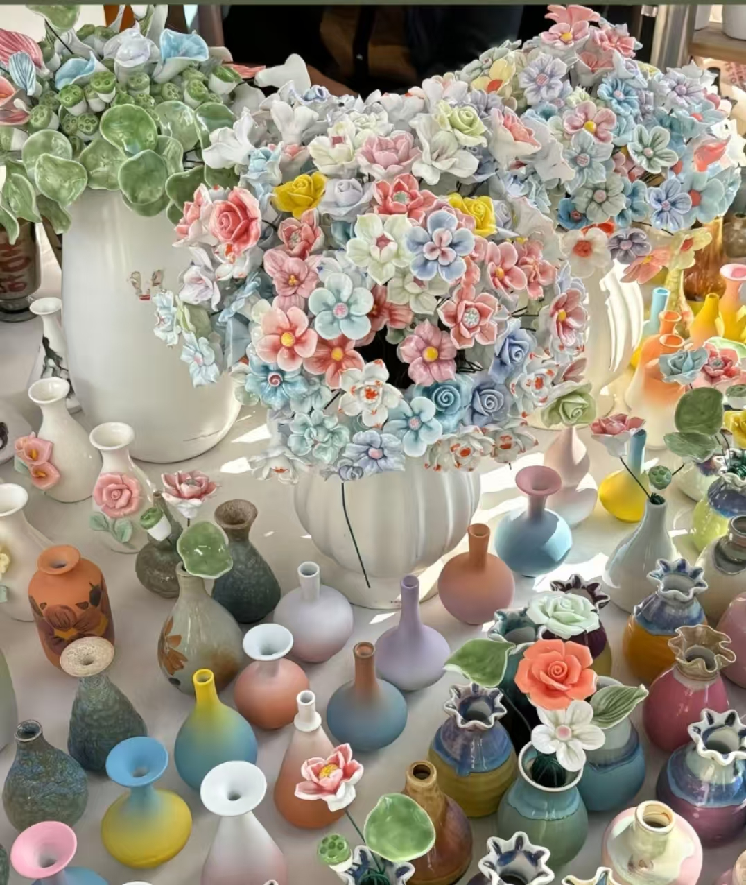
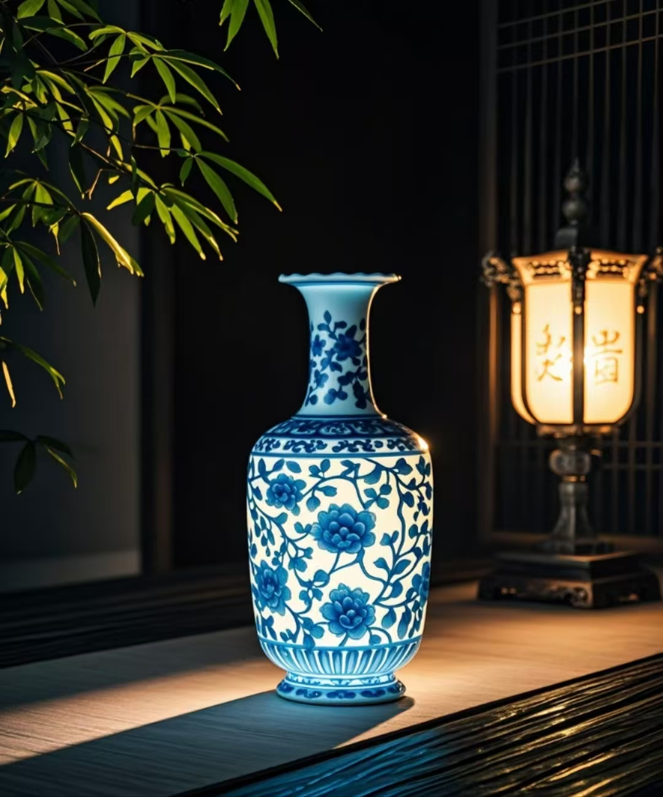

景德镇，这座被誉为“千年瓷都”的城市，以其深厚的陶瓷文化底蕴闻名于世。其陶瓷文化可追溯至2000多年前的冶陶史，历经千年窑火淬炼，形成了独特的文化景观。景德镇陶瓷以“白如玉、明如镜、薄如纸、声如磬”的特质著称，青花、玲珑、粉彩、颜色釉四大名瓷更是各具魅力。这里不仅保留了从原料开采到烧造成器的完整制瓷技艺，更将陶瓷文化融入城市肌理，成为一种生活方式。
景德镇的陶瓷文化是开放包容的。自宋代起，北方窑工因战乱南迁，将定窑、磁州窑等技艺带入景德镇，与本地传统交融创新，催生出青白瓷等突破性品类。元代设立浮梁磁局后，波斯青花钴料“苏麻离青”的传入，更使景德镇成为青花瓷的诞生地。这种跨文明的技艺对话，在瓷器纹饰中尤为明显——缠枝纹融合了埃及纸莎草与古希腊茛苕纹的形态，既保留东方审美意趣，又融入异域文化符号。
陶瓷文化的传承在景德镇呈现鲜活态。全市现有3200余名非遗传承人，他们以“师徒相授”的方式延续着拉坯、利坯、施釉等七十二道古法工序。陶阳里历史文化街区保留着明清窑作群落，游客可在此触摸千年窑火余温；陶溪川文创街区则将老瓷厂改造为艺术空间，定期举办创意集市，吸引全球陶艺家驻场创作。这种“古法新用”的实践，让传统技艺与当代审美碰撞出新的火花。